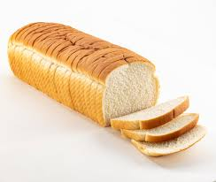

Bread

Description
Bread, the most simple carbohydrate of all time, however there isn't just one type of bread, types vary.
Bread can range from wholegrain, wholemeal, white, spelt, rice, sourdough, etc. the list goes on and on...
But since the dawn of time we have been consuming bread, mostly because wheat can grow in such harsh conditions compared
to numerous other crops. This recipe will be a simple run down on how to create white bread.
Ingredients
- 4 teaspoons of instant yeast
- .75 cup of warm water & 2.6 cup of warm water (divided)
- 52g of granulated sugar
- 1 tbsp of salt
- 3 tbsp unsalted butter
- 9 cups all purpose flour
- 3 tbsp unsalted butter (melted)
LessDoit
- In the bowl of a mixer, dissolve yeast in ¾ cup (180ml) of warm water and let sit for 5 minutes.
- Add 2⅔ cups (640ml) water, sugar, salt, room temperature butter, and 5 cups of flour. Stir to combine.
- Using a dough hook, mix on low speed, gradually adding remaining flour until dough is soft and tacky, but not sticky. Knead until a soft ball forms and clears the sides of the bowl, about 7 to 10 minutes.
- Place dough in a lightly greased bowl, turn to coat, cover with plastic wrap, and let rise in a draft-free place until doubled, about 45 minutes to 1 hour.
- Turn dough onto a clean, lightly floured surface, press to remove air pockets, and divide in two.
- For each piece, pat into a 9x12-inch rectangle, roll tightly from the short end into a cylinder, pinch seams and ends to seal, tuck ends, and place into greased 9-inch loaf pans.
- Cover loaves loosely and let rise in a draft-free area until doubled, about 30 to 45 minutes.
- Position an oven rack on the lowest setting and preheat oven to 400°F (200°C).
- Brush loaves with melted butter and bake for 30 to 35 minutes, rotating halfway, until golden brown (internal temperature should read 195°F).
- Remove from oven, brush with more melted butter, cool for 10 minutes, then remove from pans and cool completely before slicing.
- Store bread in an airtight bag or wrapped tightly in plastic wrap at room temperature for up to 4 days or freeze for up to 1 month.